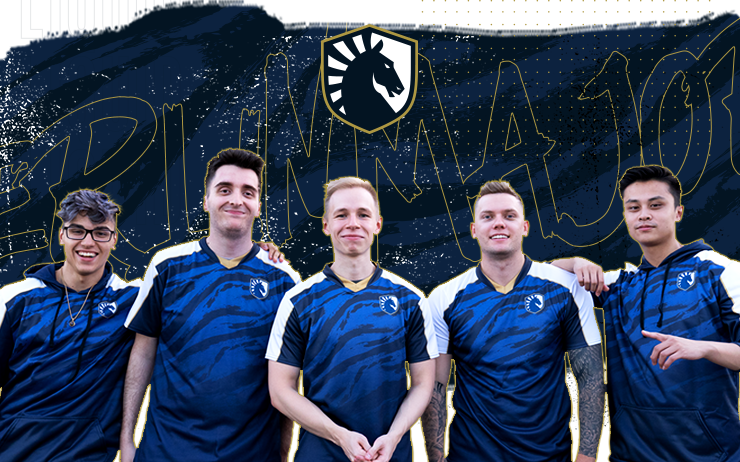

In 2019, Team Liquid's CS:GO roster was a formidable lineup that made a significant impact in the competitive scene. The team was known for its exceptional synergy and skill, which led them to achieve remarkable success, including winning the Intel Grand Slam. The roster featured key players such as NAF, who was celebrated for his sharp aim and versatility, and Twistzz, known for his explosive plays and clutch potential. Additionally, EliGE was a standout performer, consistently delivering high-impact rounds. The team was led by Stewie2K, who brought a dynamic leadership style and aggressive playstyle, while TACO contributed with his experience and support role. This combination of talent and teamwork allowed Team Liquid to dominate many tournaments throughout the year, solidifying their status as one of the top teams in the world.
As of 2024, Team Liquid's CS2 roster features a mix of established talent and promising new players, aiming to reclaim their position at the top of the competitive scene. Here’s a breakdown of the current roster: ultimate (Roland Tomkowiak) - A promising new addition from Poland, ultimate joined the team in July 2024. jks (Justin Savage) - The versatile Australian player, also part of the roster since July 2024. MithR (Torbjørn Nyborg) - A key strategic player, contributing significantly to the team's tactical decisions. Twistzz (Russel Van Dulken) - A returning star known for his exceptional skills and clutch performances. NAF (Keith Markovic) - A veteran player recognized for his consistent performance and versatility. Yekindar (Mareks Gaļinskis) - Another strong addition, known for his aggressive playstyle and impact in matches.

Audio
Video